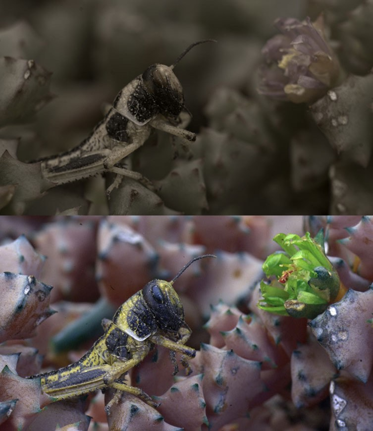
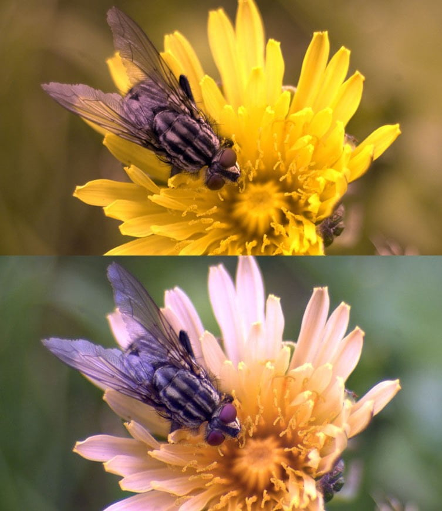
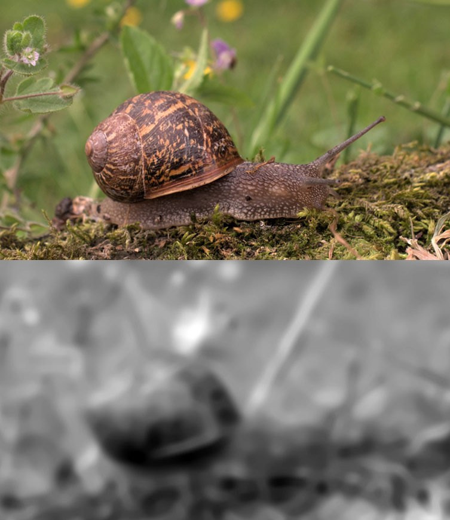

တိရစ္ဆာန် လောကက သန်းပေါင်း များစွာသော သတ္တဝါ တွေ အားလုံးရဲ့ မျက်လုံးတွင်းက မြင်လွှာ (Retina) တိုင်းကိုတော့ သိပ္ပံ ပညာရှင်တွေ လေ့လာနိုင်စွမ်း မရှိ သေးပါဘူး။
ဒါပေမယ့် အခုထိ လေ့လာ ပြီးသမျှ မြင်လွှာ တွေကနေ ရတဲ့ သုတေသန ရလဒ် တွေအပေါ် အခြေပြုပြီး ပညာရှင်တွေ ကောက်ချက် ချထားတာ ကတော့ တိရစ္ဆာန် မျိုးစိတ် အများအပြားဟာ အရောင် မြင်နိုင်စွမ်း ရှိကြတယ် ဆိုတာပဲ ဖြစ်ပါတယ်။
အကြမ်းဖျင်း ပြောရရင်တော့ နေ့ဖက် ကျက်စားတဲ့ သတ္တဝါ အများစုဟာ အရောင် မြင်နိုင်စွမ်း ရှိကြပါတယ်။ ဒါပေမယ့် ညဖက် ကျက်စားတဲ့ သတ္တဝါ အများစု ကတော့ အရောင် မြင်နိုင်စွမ်း မရှိပါ ဘူးတဲ့။
ဒါပေမယ့် ဒါကလဲ အမြဲတမ်းတော့ မှန်တာ မဟုတ်ပါဘူး။ ချွင်းချက် အနေနဲ့ အရောင် မမြင်တဲ့ နေ့ဖက် ကျက်စားတဲ့ သတ္တဝါတွေ အမြောက်အများ ရှိကြသလို ညဖက် ကျက်စားတဲ့ သတ္တဝါ တွေထဲကလဲ အရောင် မြင်ရတဲ့ သတ္တဝါ မျိုးတွေ အများအပြား ရှိနေ ပါတယ်။
တိရစ္ဆာန် တွေ နဲ့ အင်းဆက် ပိုးမွှားတွေရဲ့ မျက်လုံးတွေဟာ ဖွဲ့စည်းပုံ နဲ့ ပုံသဏ္ဍာန် အမျိုးမျိုး ရှိကြပါတယ်။
သိန်းငှက်တွေဟာ အမြင့် ၁ မိုင်ခန့်ကနေ မြေပြင်ပေါ်က ကြွက်တစ်ကောင်ကို မြင်နိုင်ပါတယ်။ ငပျင်ကောင် (sloth) တွေကတော့ မျက်စေ့ မှုန် လွန်းလို့ လှုပ်ရှားမှု မရှိတဲ့ အရာတွေကို မြင်နိုင်စွမ်း မရှိကြ ပါဘူး။
ဒီလို အရမ်း ကွာခြား ကျယ်ပြန့်တဲ့ အမြင်အာရုံ စွမ်းရည်တွေ ရှိကြတဲ့ တိရစ္ဆာန် တွေ အရောင် မြင်မမြင် ဆိုတဲ့ မေးခွန်းကို ဖြေဖို့ဆိုတာ တိရစ္ဆာန် တစ်ကောင်ချင်း ခွဲခြား သုတေသနပြု အဖြေရှာတာ က ပိုပြီး သင့်တော်မှာ ဖြစ်ပါတယ်။
အရင်ဆုံး လူတွေမှာ ကြည့်လိုက် ရအောင်ပါ။ လူတွေ ဘာ့ကြောင့် အရောင်စုံ မြင်ရတာလဲ။
လူ့ မျက်လုံး ထဲက မြင်လွှာမှာ အမြင်အာရုံခံ ဆဲလ် နှစ်မျိုး ရှိပါတယ်။ ဒါကတော့ တုတ်ချောင်းပုံ ရှိတဲ့ ဆဲလ် (rod) တွေနဲ့ ကတော့ပုံ ဆဲလ် (cone) တွေပဲ ဖြစ်ကြပါတယ်။ တုတ်ချောင်းဆဲလ် တွေက အလင်းရောင် အားနည်းတဲ့ အချိန် မြင်နိုင်ဖို့ အထောက်အကူ ပေးပါတယ်။ ကတော့ပုံ ဆဲလ် တွေကတော့ အရောင် မြင်နိုင်ဖို့ အကူအညီ ပေးတဲ့ ဆဲလ်တွေ ဖြစ်ကြပါတယ်။
ဒီ ကတော့ပုံ ဆဲလ်တွေဟာ သူတို့ အလုပ်လုပ်ဖို့ အလင်းရောင် ကောင်းကောင်း လိုပါတယ်။ ဒါ့ကြောင့် ညဖက် အမှောင်ထဲမှာ လူတွေဟာ အရောင် သဲသဲကွဲကွဲ မမြင်နိုင် ကြတာ ဖြစ်ပါတယ်။

နေ့ဖက် အလင်းရောင် အောက်မှာတော့ အလင်းရောင် ကောင်းကောင်း ရတာမို့ ကတော့ပုံ ဆဲလ်တွေ အလုပ်ကောင်းကောင်း လုပ်ကြပါတယ်။ ဒါ့ကြောင့်လဲ နေ့ဖက်ဆို အရောင် စိုစို မြင်ကြရတာ ဖြစ်ပါတယ်။
ဒီတော့ တိရစ္ဆာန်တွေ အရောင် မြင်မမြင် ဆိုတဲ့ မေးခွန်းကို ဖြေဖို့ ဆိုရင်လဲ သူတို့ရဲ့ မျက်လုံးထဲမှာ ကတော့ဆဲလ် ဘယ်လောက် များများ ရှိသလဲ ဆိုတာကို အရင် လေ့လာဖို့ လိုအပ်ပါတယ်။
အခုထိ သိပ္ပံ ပညာရှင်တွေ လေ့လာ ခဲ့သမျှ ညဖက် ကျက်စားတဲ့ သတ္တဝါ အမျာစုရဲ့ မြင်လွှာမှာ ကတော့ဆဲလ် တွေ ပါမလာ ကြပါဘူး။ ဒီတော့ ဒီ ညဖက် ကျက်စားတဲ့ သတ္တဝါ တွေအနေနဲ့ အရောင်ကို မြင်ရလိမ့်မယ် မဟုတ်ဘူးလို့ သိပ္ပံ ပညာရှင် တွေက ကောက်ချက် ဆွဲကြပါတယ်။
ဒီ့အစား သူတို့မှာ ပိုများတဲ့ တုတ်ချောင်းပုံ ဆဲလ်တွေ ပါဝင် ကြပါတယ်။ ဒါ့ကြောင့်လဲ ဒီ သတ္တဝါ တွေဟာ ညဖက် အမှောင်ထဲမှာ မြင်နိုင်စွမ်းအား ရှိကြတာ ဖြစ်ပါတယ်။
ဒါပေမယ့် ညဖက် ကျက်စားတဲ့ သတ္တဝါ တိုင်းကတော့ ကတော့ဆဲလ်တွေ ပါမလာတာ မဟုတ်ပါဘူး။ ဥပမာ ညဖက် ထွက်တဲ့ ဇီးကွက် တွေမှာဆို ကတော့ဆဲလ်တွေ အများအပြား ပါဝင်တာမို့ သိပ္ပံ ပညာရှင် တွေက ဇီးကွက်တွေဟာ အရောင် မြင်နိုင်မယ်လို့ ယူဆကြ ပါတယ်။

လူတွေရဲ့ မြင်လွှာမှာ ကတော့ဆဲလ် အမျိုးအစား ၃ မျိုး ပါဝင်ပါတယ်။ ဒီ ကတော့ ဆဲလ် တွေဟာ မတူညီတဲ့ လှိုင်းအလျား ရှိတဲ့ အလင်းကို ဖမ်းယူ နိုင်ကြပါတယ်။ တနည်းအား ဖြင့်တော့ မတူတဲ့ အရောင် တွေကို ဖမ်းယူ နိုင်ကြပါတယ်။
ဒီ ကတော့ဆဲလ် ၃ မျိုးဟာ အနီ၊ အပြာ နဲ့ အစိမ်း ၃ ရောင်ကို အသီးသီး ဖမ်းယူ နိုင်ကြပါတယ်။ ဒီ အရောင် ၃ မျိုး စပ်ပြီး ကျွန်တော်တို့ရဲ့ ဦးဏှောက်က အရောင်တွေကို ပြန်လည် အဓိပ္ပါယ် ဖော်ပေးတာပဲ ဖြစ်ပါတယ်။
ခွေးတွေ ကြောင်တွေ မှာတော့ ကတော့ဆဲလ် ၂ မျိုးပဲ ပါဝင်ပါတယ်။ ဒါ့ကြောင့် သူတို့ရဲ့ မြင်ရတဲ့ အရောင်ဟာ လူတွေမှာလောက် စိုပြေ မနေ သလို အချို့ အရောင်တွေ ကိုလဲခွဲခြားပြီး မမြင်နိုင် ကြပါဘူး။ (color blink အရောင် ကန်းနေတဲ့ အမြင်မျိုး ဖြစ်နေပါမယ်။)
ဒါပေမယ့် ခွေးတွေ ကြောင်တွေရဲ့ မြင်လွှာမှာ ပါဝင်တဲ့ တုတ်ချောင်းဆဲလ် ပမာဏဟာ လူတွေမှာထက် ပိုများပါတယ်။ ဒါ့ကြောင့်လဲခွေးတွေ၊ ကြောင်တွေဟာ အမှောင်ထဲမှာ လူတွေထက် ပိုမြင်နိုင် ကြတာ ဖြစ်ပါတယ်။
ခွေးတွေဟာ အစိမ်းနဲ့ လိမ္မော်ရောင် နဲ့ကို ခွဲခြားနိုင်စွမ်း မရှိ ကြပါဘူး။ သူတို့ အတွက်တော့ ဒီနှစ်ရောင် လုံးဟာ မီးခိုးရောင် ညိုမှိုင်းမှိုင်းပဲ ပေါ်နေမှာ ဖြစ်ပါတယ်။
ဒါကို ဥပမာ ပြရရင် လိမ္မော်ရောင် တောက်တောက် ဘောလုံး တစ်လုံးကို မြက်ခင်းစိမ်းစိမ်းပေါ် ပစ်လိုက်ရင် ခွေးဟာ ဒီ ဘောလုံး ရွေ့နေတဲ့ အချိန်မှာ ဘောလုံးနောက်ကို လိုက်နိုင်ပါတယ်။ ဒါပေမယ့် ဘော်လုံး မလိမ့်နေဘူး ဆိုရင် ဘောလုံး လိမ္မော်ရောင်နဲ့ မြက်ခင်း အစိမ်း ရောသွားပြီး ကောင်းကောင်း မမြင် ရတော့ ပါဘူး။
လူတွေမှာတော့ အစိမ်းရောင် အရောင်ကန်း တာကို deuteranopia လို့ ခေါ်ပါတယ်။

ကြောင်တွေ အတွက် အနီရောင်ကို မီးခိုးမှိုင်းရောင် အနေနဲ့ပဲ တွေ့ကြရမှာ ဖြစ်ပါတယ်။
သိပ္ပံ ပညာရှင် တွေက ကြောင်တွေနဲ့ ခွေးတွေရဲ့ အမြင် အာရုဏ်ဟာ အဓိက အားဖြင့် အဝါ၊ အပြာနဲ့ မီးခိုးရောင် အရောင်တွေနဲ့ ဖွဲ့စည်း ထားတယ်လို့ ယုံကြည် ကြပါတယ်။
လိပ်ပြာ တွေနဲ့ ပြားတွေမှာတော့ လူတွေလိုပဲ အရောင် ၃ မျိုး လက်ခံနိုင်တဲ့ အမြင်ဆဲလ်တွေ ရှိကြပါတယ်။ ဒါ့ကြောင့် သူတို့ဟာ လူတွေလိုပဲ အရောင် စုံအောင် မြင်နိုင်ကြ မယ်လို့ ယူဆ ရပါတယ်။ ဒါပေမယ့် သူတို့မှာ လူတွေနဲ့ မတူတာ ကတော့ လူတွေ မမြင်နိုင်တဲ့ ခရမ်းလွန် ရောင်ခြည်ကို မြင်နိုင်တာပဲ ဖြစ်ပါတယ်။
ငါးတွေမှာတော့ coral reef ကျောက်ခက်တွေကြား ကျက်စားတဲ့ ငါးအမျိုးနွယ် တွေမှာ လူတွေလိုပဲ အရောင်စုံအောင် မြင်နိုင်မယ်လို့ ယူဆ ကြပါတယ်။ ဒီ ကောက်ချက်ကို သိပ္ပံ ပညာရှင် တွေက ဒီ ငါးတွေရဲ့ ကိုယ်ခန္ဓာနဲ့ သူတို့ ကျက်စားတဲ့ ပတ်ဝန်းကျင်က အရောင် စုံလင် စိုပြေတယ် ဆိုတဲ့ အချက်ကို ကြည့်ပြီး ကောက်ချက်ဆွဲ ကြတာ ဖြစ်ပါတယ်။
တိရစ္ဆာန် တွေရဲ့ ကိုယ်ခန္ဓာက အရောင်တွေဟာ သူတို့ကို စားသောက်မယ့် သတ္တဝါ တွေရဲ့ ရန်က ကာကွယ်ဖို့ (ဥပမာ ပတ်ဝန်းကျင်နဲ့ အရောင် ရောထွေး သွားတာမျိုး) နဲ့ ဆန့်ကျင်ဖက် လိင်ကို ဆွဲဆောင်ဖို့ ဖြစ်ပေါ်လာ ကြတာ ဖြစ်ပါတယ်။
ဒီလို အရောင်အသွေး စုံတဲ့ ကိုယ်ခန္ဓာ အရောင် အဆင်း ဖန်တီးနိုင် စွမ်းဟာ အရောင် ကန်းတဲ့ သတ္တဝါ တွေမှာ ပျောက်ဆုံး သွားကြပါတယ်။ ဒါ့ကြောင့် အရောင်ကန်းတဲ့ သတ္တဝါ အများစုရဲ့ ကိုယ်ခန္ဓာ အရောင်ဟာ မွဲခြောက်ခြောက် ဖြစ်နေကြတာ များပါတယ်။
ရေထဲ ကျက်စားတဲ့ နို့တိုက် သတ္တဝါတွေ ဖြစ်ကြတဲ့ ဝေလငါး၊ လင်းပိုင် အစရှိတဲ့ သတ္တဝါ တွေမှာတော့ ကတော့ပုံဆဲလ် တစ်မျိုးထဲ ပါဝင် နေတာကို တွေ့ကြရပါတယ်။ ဒီ သတ္တဝါ တွေရဲ့မျက်လုံးဟာ အရောင်တွေကို ခွဲခြားနိုင်ခြင်း မရှိကြပဲ အလင်းရောင် အမှိန်အဖျော့ ကိုပဲ ခွဲခြားနိုင် ကြပါတယ်။ ဒီ သတ္တဝါ တွေကတော့ လုံးဝ အရောင် ကန်းနေပြီး အဖြူအမဲ အနေနဲ့ပဲ မြင်ကြရ မယ်လို့ ယူဆရ ပါတယ်။
တိရစ္ဆာန် အများစုဟာ လူတွေလောက် အရောင် စုံအောင် မမြင် ကြရပါဘူး။ ဒါပေမယ့် အပေါ်မှာ ပြောခဲ့ သလိုပဲ နေ့ဖက် ကျက်စားတဲ့ သတ္တဝါ အများစုဟာ အရောင် တွေကို အတိုင်းအတာ တစ်ခု အထိ မြင်နိုင်ကြပြီး ညဖက် ကျက်စားတဲ့ သတ္တဝါ အများစု ကတော့ အရောင် ကန်းကြတာ များပါတယ်။
Ref:
Do Animals See in Color? | All Things Nature
How do other animals see the world? | Natural History Museum